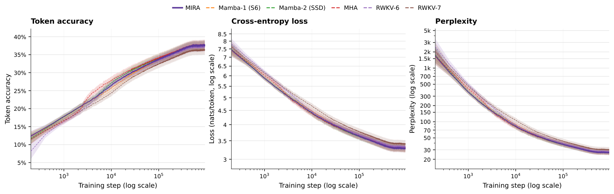

Pole-range claims for the transfer functions of recurrent architectures (SSMs, RWKV, RetNet, etc.) are formally verified in Lean 4, alongside Z3.
Abstract
We show that the Transformer's recurrent successors — such as selective state-space models (SSMs), Receptance Weighted Key Value (RWKV), and Retentive Network (RetNet) — can be characterized as infinite-impulse-response (IIR) systems. The zero–pole geometries of these IIR systems characterize the temporal modes they can represent. However, to trade parallelism, the algebraic structures of the parameterizations of these recurrent systems often give rise to poles constrained to the real axis, thereby inducing an architectural bias in their recurrent dynamics. To unify these recurrent architectures and eliminate their pole geometry bias, inspired by the lattice–ladder realization of general IIR systems, we present Mira (Modal IIR Recurrent Architecture), a unified family of linear-time recurrent architectures for building large language models (LLMs) with a highly parallel algebraic structure. Each Mira block realizes a higher-order IIR system that represents temporal modes from token streams through a lattice–ladder structure, followed by a feed-forward network (FFN). This realization enables the model to represent the temporal modes associated with both real and complex-conjugate poles. We pretrain Mira-S, a 12-layer small-scale LLM with 0.14B parameters composed entirely of Mira blocks. Throughout the pretraining, Mira-S achieves lower perplexity than strong recurrent baselines, exhibits stronger context-window generalization beyond the training length, and attains higher throughput with a dedicated CUDA kernel.
Problem
Recurrent successors to Transformers (selective SSMs, RWKV, RetNet and others) can be viewed as IIR systems. To allow parallel computation, their parameterizations often restrict poles to the real axis. This biases the temporal modes the models can represent.
Approach
The authors derive transfer-function characterizations of existing recurrent architectures. They check these numerically and formally verify the pole ranges in Lean 4 and Z3. They then propose MIRA, a lattice–ladder realization of higher-order IIR systems that can represent both real and complex-conjugate poles. Its associative affine state-transition structure enables chunkwise GPU parallelism, implemented with a dedicated CUDA kernel.
Results
MIRA-S (0.14B parameters, 12 layers) achieves lower perplexity than RWKV-6/7, Mamba-1/2 and a Transformer baseline on FineWeb-Edu, WikiText-103 and HellaSwag. It generalizes to 32K-token contexts despite training on 512-token contexts.

Figure 7: Dynamics of Pretraining Benchmark. We implement a small-scale reference LLM composed entirely of Mira blocks, denoted as Mira-S . Pretraining results show that Mira-S achieves the lowest perplexity among strong recurrent language model baselines and Transformer-based MHA, while attaining higher token-prediction accuracy than the recurrent baselines and comparable token-prediction accurac
Model
PPL @512
PPL @32K
Transformer (MHA)
29.96
1.51e3
RWKV-7
32.63
30.65
Mamba-2
32.02
9.53e11
Mira-S
27.75
25.30
FineWeb-Edu validation perplexity at context lengths 512 and 32K (training context 512)